السلسلة 71
السيارة (صنف B) · 40 سؤال. كل سؤال فيه الصورة والصوت. اختار الجواب (ولا جوج إلا كانو صحاح)، ورك على «تأكيد» باش تشوف واش صبتي.
- 40سؤال
- 32باش تنجح
- 1 – 4جواب واحد ولا أكثر
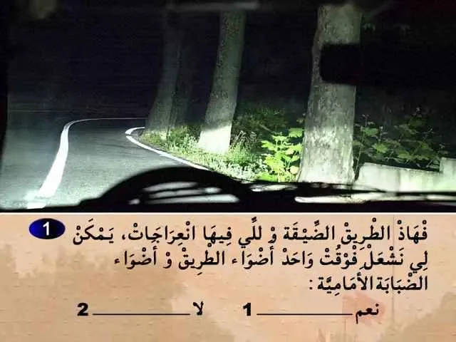
الكلافيي: 1–4 للجواب، Enter للتأكيد وللسؤال الجاي.
السلسلة 71 · النتيجة ديالك
0 / 40
السلسلة 71
السيارة (صنف B) · 40 سؤال، بالصوت، مع الجواب الصحيح والشرح.
السؤال 1
بيّن الجواب
الجواب الصحيح: 1
منين نكونوا فطريق ضيقة وفيها بزاف ديال المنعرجات، نشعلو ضو ديال الضباب باش يبان لينا جنب الطريق، ولكن إلا كان غير منعطف واحد ما نشعلوش، فهاد الحالة نشعلو ضو الطريق وضو الضباب الأمامي.
السؤال 2
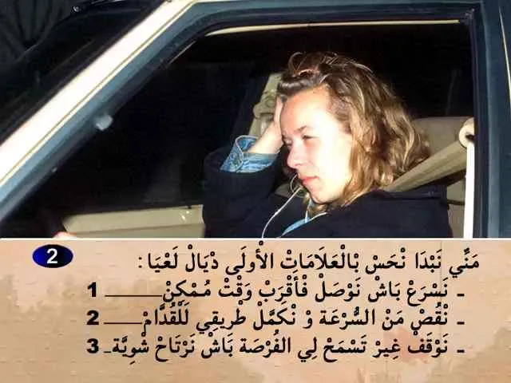
بيّن الجواب
الجواب الصحيح: 3
القانون كيقول بعد كل جوج سوايع سياقة خاصني ناخد راحة ديال 15 دقيقة. يعني إلا حسيت بالتعب خاصني نوقف فشي بلاصة مسموح بها وناخد راحة ومن بعد نكمل الطريق.
السؤال 3
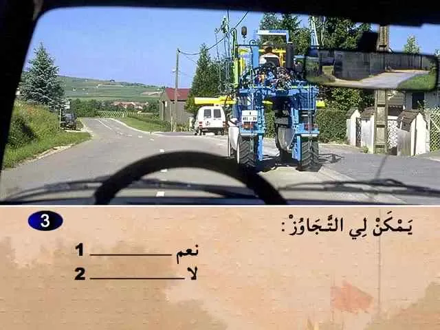
بيّن الجواب
الجواب الصحيح: 1
الطوموبيل كتسير ببطء وخط التشوير المتقطع كيسمح لي نتجاوز، وما كايناش شي طوموبيل فالاتجاه المعاكس كتوجد باش تجاوزني، إذن يمكن لي نتجاوز.
السؤال 4
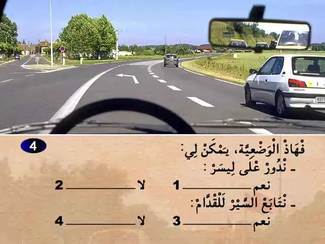
بيّن الجواب
الجواب الصحيح: 1 و 4
فهاد الحالة، السهم اللي مرسوم فالأرض كيحتم عليا ننعطف لليسار وما يمكنش نكمل الطريق مباشرة، إلا بغيت نكمل خاصني نكون فالمسلك اللي فاليمن.
السؤال 5
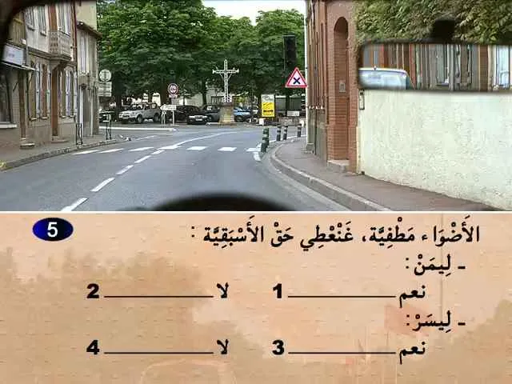
بيّن الجواب
الجواب الصحيح: 1 و 4
الإشارات الضوئية ما خداماش. عندنا إشارة الخطر وملتقى الطرق، يعني نطبقو القاعدة العامة اللي كتقول الأسبقية للطوموبيلات اللي جاية من اليمن وماشي من اليسار. نعطي الأسبقية للطوموبيلات اللي جاية من اليمن وما نعطيش للطوموبيلات اللي جاية من اليسار.
السؤال 6
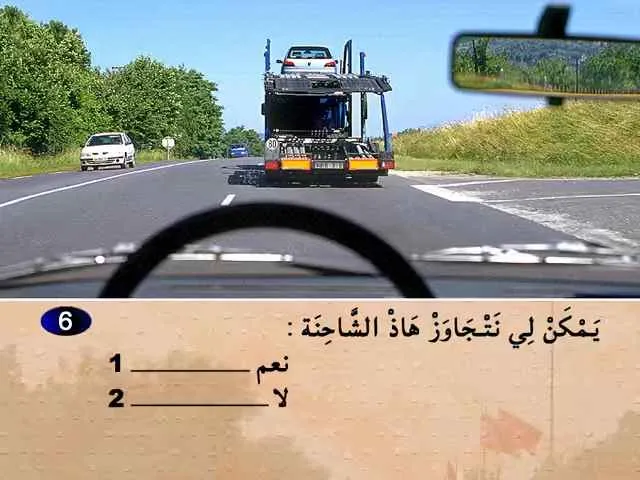
بيّن الجواب
الجواب الصحيح: 1
الطريق عندنا فيها جوج مسالك، وخط التشوير المتقطع كيسمح لنا بالتجاوز، وما كايناش شي طوموبيل كتوجد باش تجاوزنا، إذن يمكن لي نتجاوز هاد الشاحنة.
السؤال 7
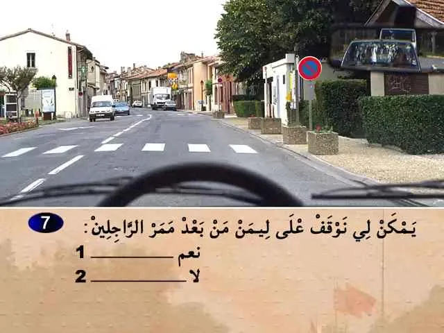
بيّن الجواب
الجواب الصحيح: 1
العلامة الطرقية كتمنع الوقوف وماشي التوقف، يعني يمكن لي نوقف فاليمن بعد ممر الراجلين.
السؤال 8
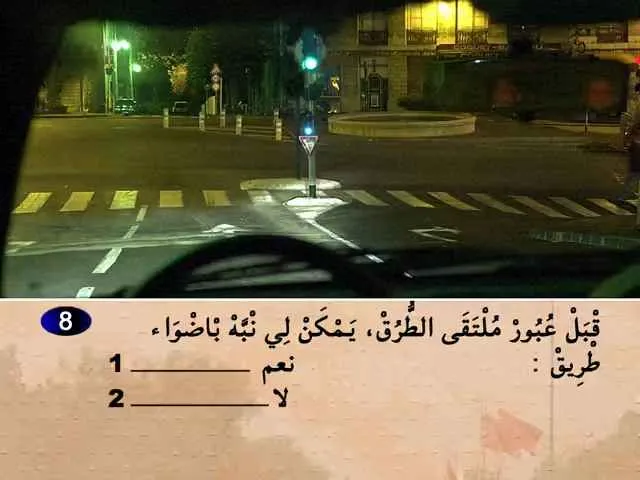
بيّن الجواب
الجواب الصحيح: 1
فليل، رغم أن الضوء أخضر خاصنا نردو البال عند المرور حيث كاين ملتقى الطرق، يمكن لنا ننبه بالضوء قبل المرور.
السؤال 9
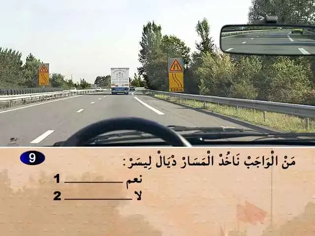
بيّن الجواب
الجواب الصحيح: 2
العلامة الطرقية الصفراء المؤقتة كتشير أن الطريق غادي يتبدل الاتجاه ديالها لليسار بعد 600 متر. ماشي ضروري نسير فالمسلك اللي فاليمن حيت العلامة الطرقية ما كتجبرنيش.
السؤال 10
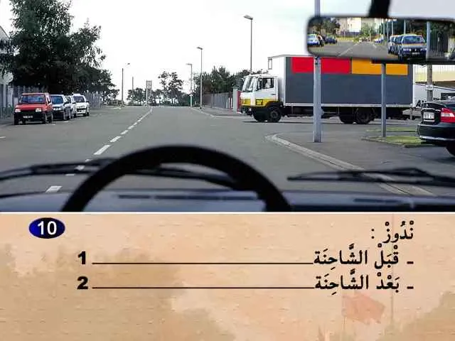
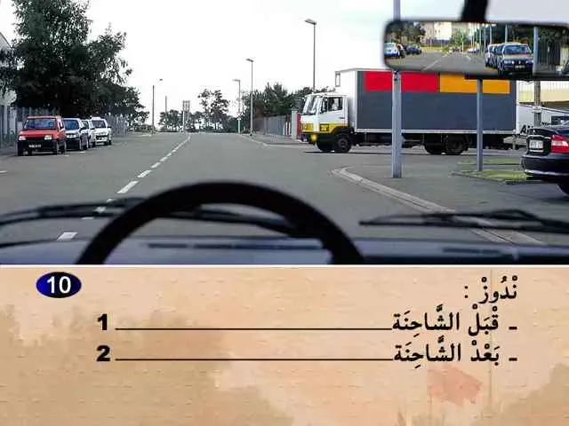
بيّن الجواب
الجواب الصحيح: 2
فملتقى الطرق، الأسبقية كيما قلنا للطوموبيلات اللي جاية من اليمن، يعني فهاد الحالة يمكن لي ندوز بعد الشاحنة.
السؤال 11
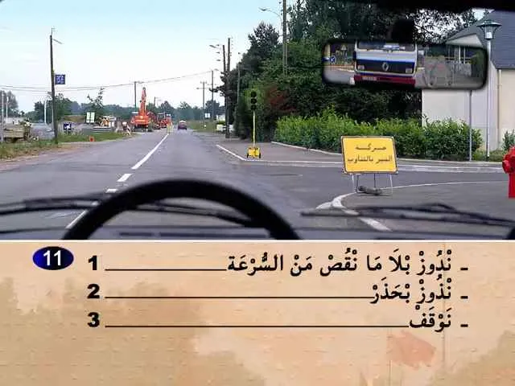
بيّن الجواب
الجواب الصحيح: 2
العلامة الطرقية (حركة السير بالتناوب) كتدل على الأشغال، وإذا كان الضوء البرتقالي رفراف خاصنا ندوزو بحذر.
السؤال 12
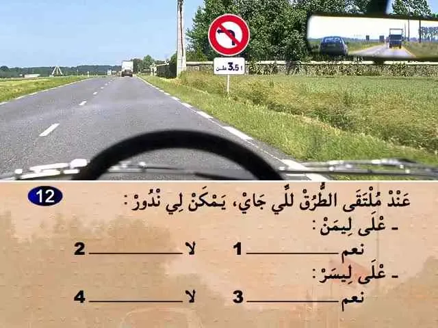
بيّن الجواب
الجواب الصحيح: 1 و 3
العلامة الطرقية كتحرم الانعطاف لليسار ولكن هاد الشي كيخص الشاحنات 3.5 طن، يعني فملتقى الطرق الجاي يمكن لي ننعطف لليمين وكذا لليسار.
السؤال 13
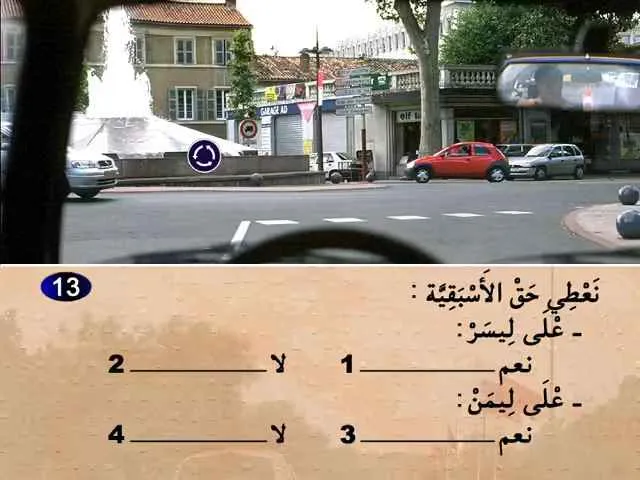
بيّن الجواب
الجواب الصحيح: 1 و 4
فالمدار، الأسبقية للطوموبيلات اللي جاية من اليسار، يعني فهاد الحالة نعطي الأسبقية للطوموبيلات اللي جاية من اليسار فقط وما نعطيش للطوموبيلات اللي جاية من اليمن.
السؤال 14
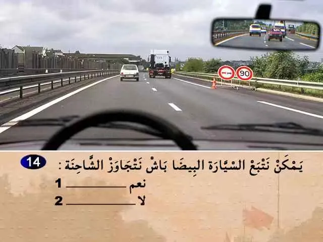
بيّن الجواب
الجواب الصحيح: 2
علامة ممنوع التجاوز كتعني خاصني نسير فالمسلك اللي فاليمن وما نتبعش الطوموبيل باش نتجاوز الشاحنة.
السؤال 15
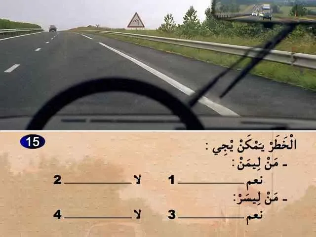
بيّن الجواب
الجواب الصحيح: 1 و 3
العلامة الطرقية كتعني خطر الرياح، الرياح يمكن تجي من اليمن أو من اليسار.
السؤال 16
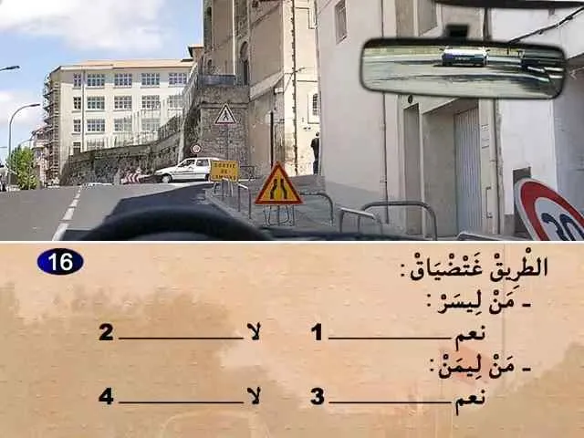
بيّن الجواب
الجواب الصحيح: 1 و 3
العلامة الطرقية كتعني الطريق غادي تضيق من الجهتين اليمنى واليسرى.
السؤال 17
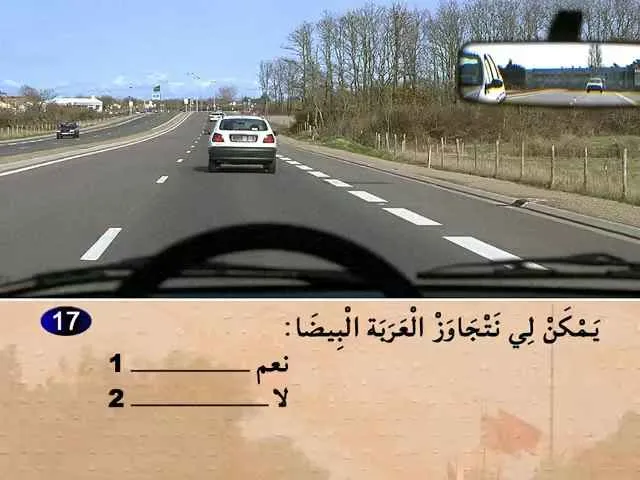
بيّن الجواب
الجواب الصحيح: 2
الخط المتقطع كيسمح لي بالتجاوز ولكن ما يمكن لي نتجاوز الطوموبيل البيضاء دابا حيت كاينة طوموبيل من الخلف كدير عملية التجاوز.
السؤال 18
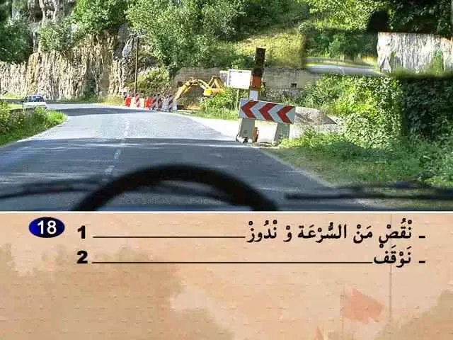
بيّن الجواب
الجواب الصحيح: 1
ماكايناش علامة طرقية كتحتم عليا الوقوف، العلامة الطرقية كتعني الطريق غادي تضيق، يعني خاصني نقص السرعة وندوز.
السؤال 19
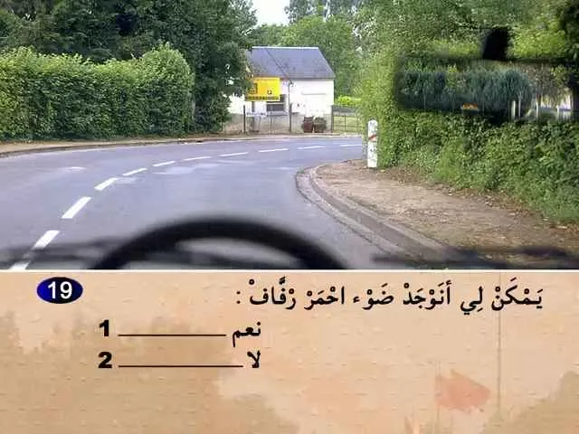
بيّن الجواب
الجواب الصحيح: 1
العلامة الطرقية (الأرامات) اللي فيها خط أحمر كتدل على سكة حديدية مع ضوء أحمر رفراف. (خط أحمر واحد يعني على بعد 50 متر).
السؤال 20
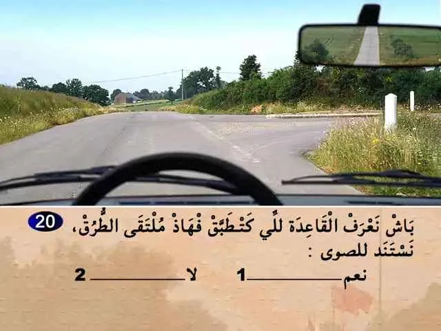
بيّن الجواب
الجواب الصحيح: 2
العلامة الطرقية (الصوى) كتدل انه يوجد ملتقى طرق وما كيقولش لينا شنو القاعدة لي خاص نطبقو.
السؤال 21
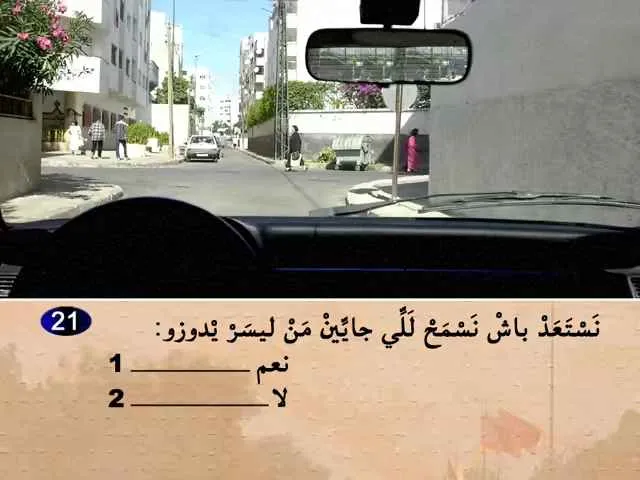
بيّن الجواب
الجواب الصحيح: 2
ما نعطيش الأسبقية للطوموبيلات اللي جاية من اليسار، قاعدة ملتقى الطرق هي نعطي حق الأسبقية للطوموبيلات اللي جاية من اليمين فقط.
السؤال 22
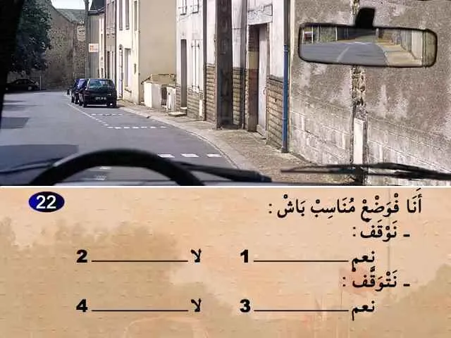
بيّن الجواب
الجواب الصحيح: 1 و 3
ماكايناش علامة طرقية كتحرم الوقوف والتوقف، يعني أنا فبلاصة مناسبة للوقوف والتوقف.
السؤال 23
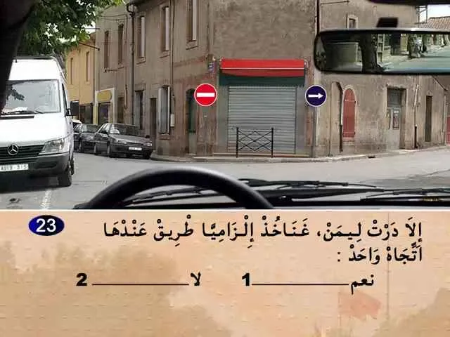
بيّن الجواب
الجواب الصحيح: 2
العلامة الطرقية كتعني منع المرور فداك الطريق، العلامة الطرقية الأخرى اللي فيها سهم لليمين كتدل على الإجبار للسير لليمين وماشي طريق ذات اتجاه واحد.
السؤال 24
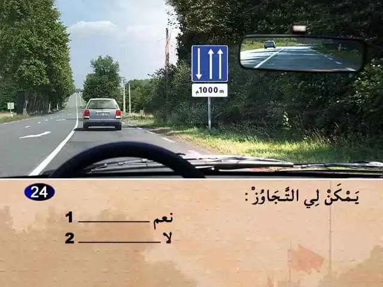
بيّن الجواب
الجواب الصحيح: 2
بعد 1000 متر غادي يكون عندنا جوج مسالك للسير ويمكن لنا فداك الحالة التجاوز، ولكن دابا ما يمكنش لنا نتجاوز حيت خط التشوير المتصل كيمنعنا.
السؤال 25
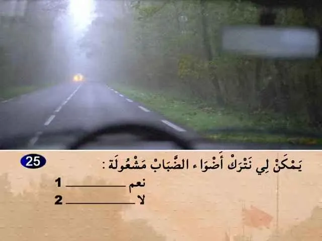
بيّن الجواب
الجواب الصحيح: 1
فحالة الضباب نشعلو ضو الضباب الأمامي والخلفي وضوء التقابل، يعني فهاد الحالة يمكن لي نخلي ضو الضباب مشتعل حيت كاين الضباب.
السؤال 26
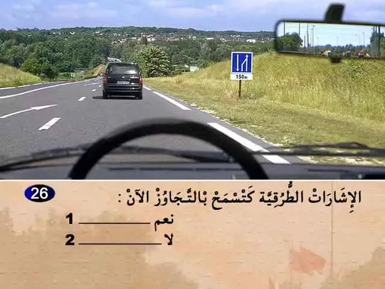
بيّن الجواب
الجواب الصحيح: 2
السهم المرسوم على الأرض كيعني أن الخط المتصل قريب، والعلامة الطرقية العمودية فيها مسافة 150 متر، يعني فهاد الحالة ما مسموحش لي نتجاوز. (إلا كانت 400 متر يمكن لي نتجاوز، أقل من 400 متر ما يمكنش).
السؤال 27
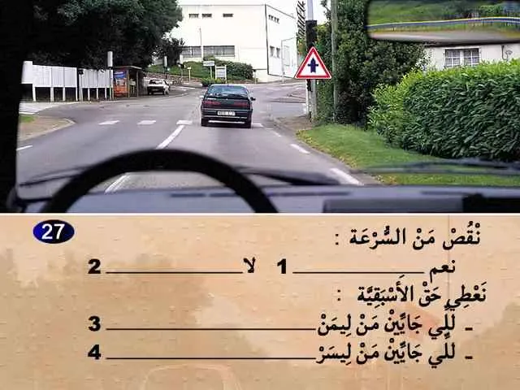
بيّن الجواب
الجواب الصحيح: 1
فملتقى الطرق، خاصني نقص السرعة، كاين تشوير ضوئي لون برتقالي رفراف كيسمح لي بالمرور بحذر، والعلامة الطرقية العمودية كتدل على أن الأسبقية ليا. يعني فهاد الحالة نقص السرعة وما نعطيش الأسبقية للطوموبيلات اللي جاية من اليمن واليسار حيت الأسبقية ليا.
السؤال 28
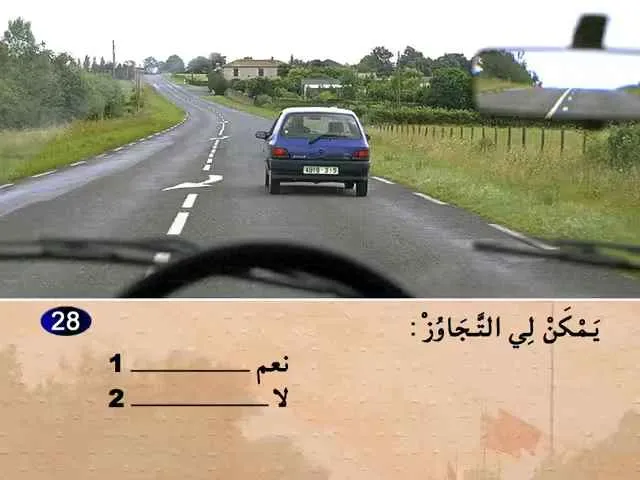
بيّن الجواب
الجواب الصحيح: 1
خط التشوير المتقطع كيسمح لي بالتجاوز، بالنسبة للأسهم المرسومة على الأرض ما كتعنينيش، هي كيخص الطوموبيلات اللي جاية من الاتجاه المعاكس.
السؤال 29
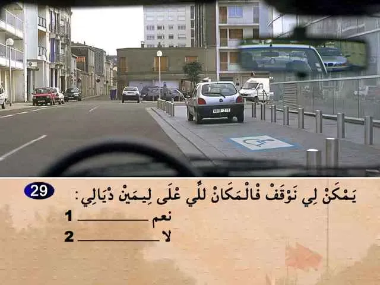
بيّن الجواب
الجواب الصحيح: 2
ما يمكنش لي نوقف فاليمن، حيت كاينة علامة كتدل أن البلاصة مخصصة لذوي الاحتياجات الخاصة، يعني ما يمكنش لي نوقف فيها.
السؤال 30
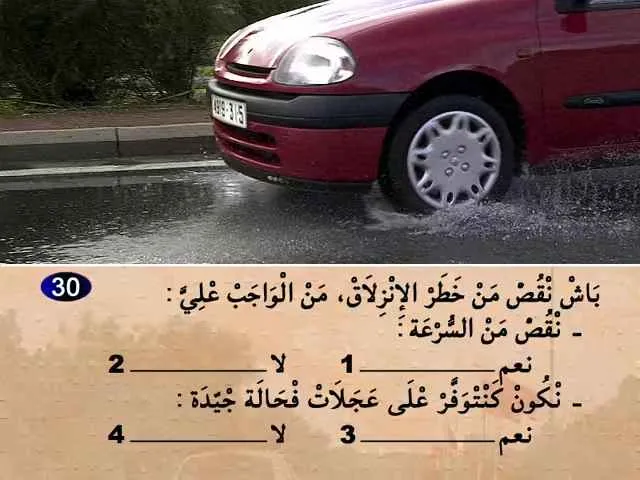
بيّن الجواب
الجواب الصحيح: 1 و 3
فالشتا، خطر الانزلاق كيزيد ومسافة الأمان والحصر كتزاد، يعني خاصنا نقصو السرعة حيث هي سبب من أسباب الانزلاق، وخاصنا نتأكدو من الحالة الجيدة للعجلات باش نتفاداو خطر الانزلاق.
السؤال 31
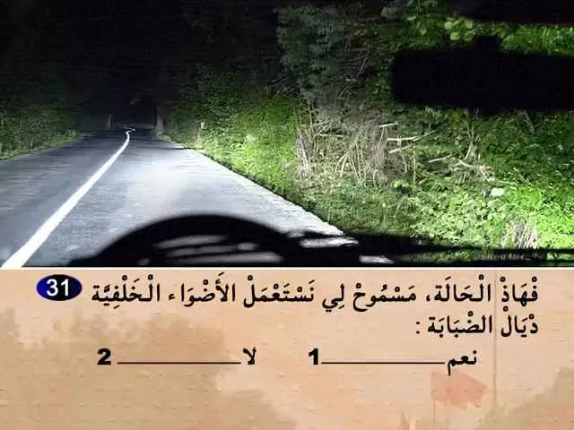
بيّن الجواب
الجواب الصحيح: 2
ماكاينش الضباب، يعني فهاد الحالة ما يمكنش لي نستعمل ضو الضباب الخلفي.
السؤال 32
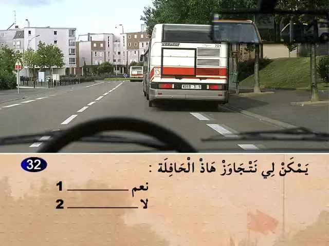
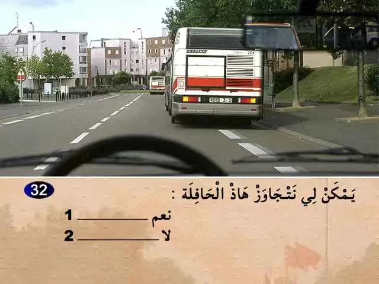
بيّن الجواب
الجواب الصحيح: 1
الحافلة واقفة وضوء النجدة شغال، وخط التشوير المتقطع كيسمح لنا بالتجاوز، يعني فهاد الحالة يمكن لي نتجاوز.
السؤال 33
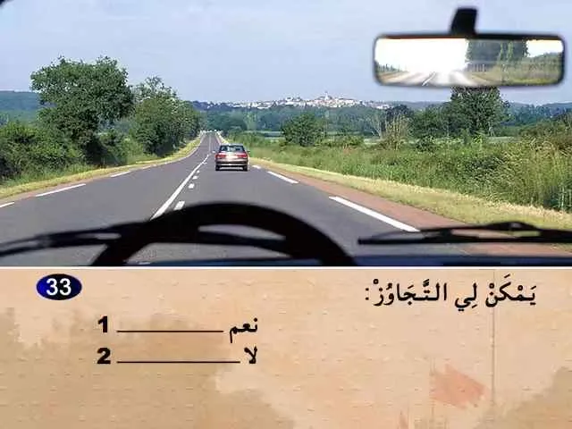
بيّن الجواب
الجواب الصحيح: 1
ماكايناش طوموبيل من الخلف كتوجد باش تجاوزني، وماكايناش طوموبيل جاية من الاتجاه المعاكس، وخط التشوير متقطع، يعني يمكن لي نتجاوز.
السؤال 34
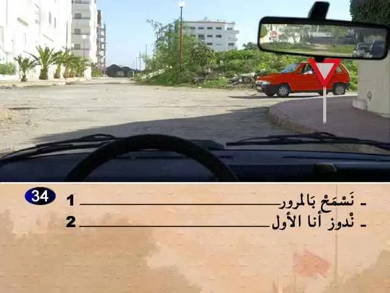
بيّن الجواب
الجواب الصحيح: 1
العلامة الطرقية كتدل على أن ما عنديش الأسبقية، يعني نخلي الطوموبيل تدوز لول.
السؤال 35
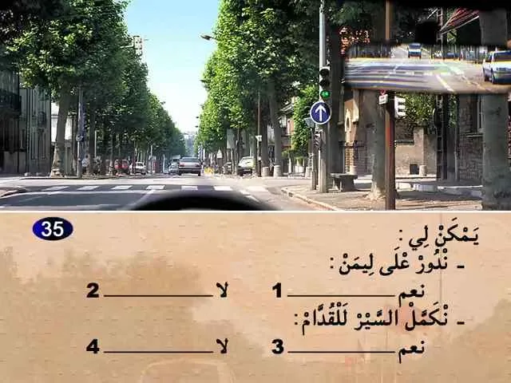
بيّن الجواب
الجواب الصحيح: 2 و 3
فهاد الحالة، السهم اللي فالعلامة الطرقية كيحتم عليا نكمل السير مباشرة وما يمكنش ليا ننعطف لليسار أو لليمين، يمكن لي غير نكمل السير مباشرة.
السؤال 36
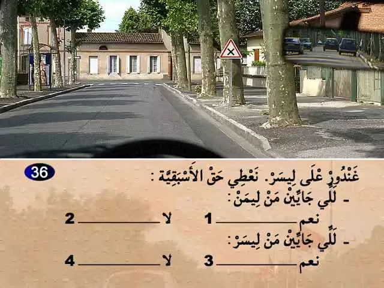
بيّن الجواب
الجواب الصحيح: 1 و 4
العلامة الطرقية كتدل على خطر ملتقى الطرق، وفملتقيات الطرق اللي ما كايناش علامات كتنظم حركة السير أو شرطي مرور، كنطبق قاعدة اعطاء حق الاسبقية للطوموبيلات اللي جاية من اليمن فقط.
السؤال 37
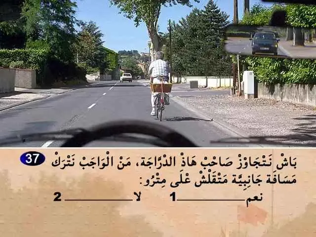
بيّن الجواب
الجواب الصحيح: 2
فهاد الحالة خاصني نخلي مسافة لا تقل عن متر باش نتجاوز صاحب الدراجة، ولكن ما يمكنش ليا نتجاوز دابا حيت قربت لملتقى الطرق.
السؤال 38
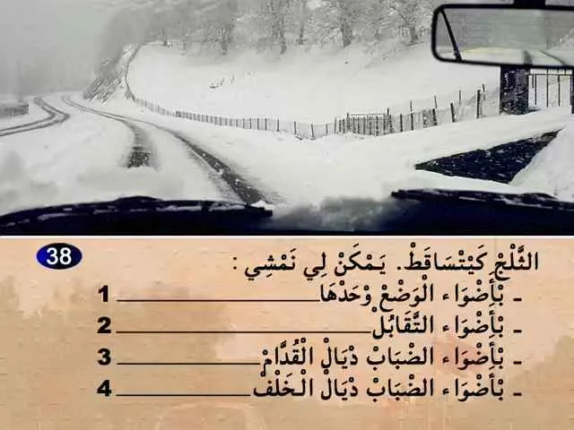
بيّن الجواب
الجواب الصحيح: 2 و 3 و 4
فحالة الثلج نشعلو ضو الضباب الأمامي والخلفي وضوء التقابل.
السؤال 39
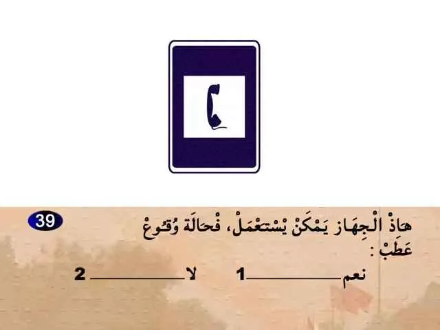
بيّن الجواب
الجواب الصحيح: 1
هاد العلامة الطرقية الخاصة بالهاتف كنلقاوها فالطريق السيار، ومخصصة للطوارئ، يعني فحالة وقع عطب يمكن لي نستعملها.
السؤال 40
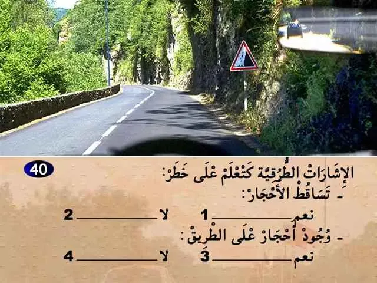
بيّن الجواب
الجواب الصحيح: 1 و 3
العلامة الطرقية الخاصة بالخطر كتشير لخطر تساقط الأحجار وكذلك خطر وجود أحجار فالطريق.